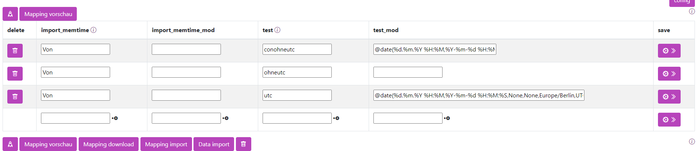

Datum

Datumsangaben anpassen
Um Datumsangaben beliebig zu formatieren, kann der folgende Befehl verwendet werden:
@date(source_date_format, target_date_format, fallback_date, source_field, source_timezone, target_timezone)
| Feld | Bedeutung | Beispiel |
|---|---|---|
| source_date_format | Das Format, in dem die Daten angegeben sind. Soll ein Komma verwendet werden, bitte ein Pipe-Symbol (|) schreiben. Um wirklich ein Pipe-Symbol (|) zu schreiben, bitte zwei Pipe-Symbole (||) verwenden. |
%Y-%m-%d |
| target_date_format | Das Format für das Zielsystem. Soll ein Komma verwendet werden, bitte ein Pipe-Symbol (|) schreiben. Um wirklich ein Pipe-Symbol (|) zu schreiben, bitte zwei Pipe-Symbole (||) verwenden. |
%Y-%m-%d |
| fallback_date | Optional: Das Datum, das verwendet werden soll, wenn die Umwandlung nicht erfolgreich ist. Wird nichts angegeben, wird ein leerer String übergeben. Variable Datumsangaben sind möglich. | get_now() |
| source_field | Optional: Wenn ein anderes Feld zur Berechnung herangezogen werden soll, kann hier ein abweichendes Feld angegeben werden. Wird nichts angegeben, wird das Feld der Zeile verwendet. | |
| source_timezone | Optional: Die Zeitzone, in der die Zeit eingegeben ist. Dies ist nur wichtig, wenn in eine andere Zeitzone konvertiert werden soll, z.B. in UTC. Alle Zeitzonen sind hier zu finden. | Europe/Berlin |
| target_timezone | Optional: Die Zeitzone, zu der die Zeit konvertiert werden soll, z.B. in UTC. Alle Zeitzonen sind hier zu finden. | UTC |
Hierbei kann ein Datumsfeld in ein anderes Format überführt werden.
%Y= Jahr mit Jahrhundert, z.B.: 2023%m= Monat mit führender Null, z.B.: 01 oder 12%d= Tag mit führender Null, z.B.: 01 oder 31%H= Stunde (24-Stunden-Format) mit führender Null, z.B.: 01 bis 23%M= Minute mit führender Null, z.B.: 01 oder 59%S= Sekunde mit führender Null, z.B.: 01 oder 59%f= Millisekunde mit führenden Nullen, z.B.: 000001 bis 999999%z= Zeitzonen-Offset zur UTC ±HHMM[SS[.ffffff]], z.B.: +0200 (Deutsche Sommerzeit)%y= Jahr ohne Jahrhundert, z.B.: 23
Nur beim Zielsystem:
%-m= Monat ohne führende Null, z.B.: 1 oder 12%-d= Tag ohne führende Null, z.B.: 1 oder 31%-H= Stunde (24-Stunden-Format) ohne führende Null, z.B.: 1 bis 23%-M= Minute ohne führende Null, z.B.: 1 oder 59%-S= Sekunde ohne führende Null, z.B.: 1 oder 59
Beispiele:
%Y-%m-%d wird zu 2023-12-31
%d.%m.%d wird zu 31.12.2023
%Y-%m-%d %H:%M:%S wird zu 2023-12-31 15:23:01
Heutiges Datum festlegen
Um das aktuelle Datum einzufügen, kann folgendes verwendet werden:
Dynamisches Datum
Es ist auch möglich, das Datum dynamisch zu berechnen, zum Beispiel:
- Für morgen:
- Für gestern:
- Für die nächste Woche:
Mögliche Werte zum Hinzufügen zu Datumsangaben:
weeks= Wochendays= Tagehours= Stundenminutes= Minutenseconds= Sekundenmilliseconds= Millisekundenmicroseconds= Mikrosekunden